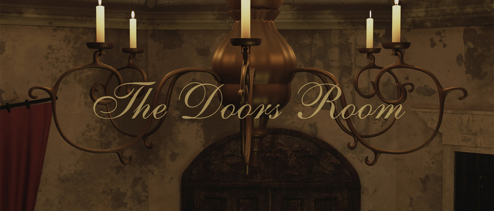

Animación 3D
The Doors Room - Alice in Wonderland

Una reinterpretación de "La Sala de las Puertas", la icónica y lúgubre habitación circular rodeada de puertas de Alicia en el País de las Maravillas (2010). Trabajé sobre su atmósfera y composición para llevarla a una versión 3D hecha en Blender.
Año: 2025
Herramientas: Blender y Adobe Premiere Pro
Categoría: Modelado, Esculpido y Texturizado 3D. Iluminación y Render